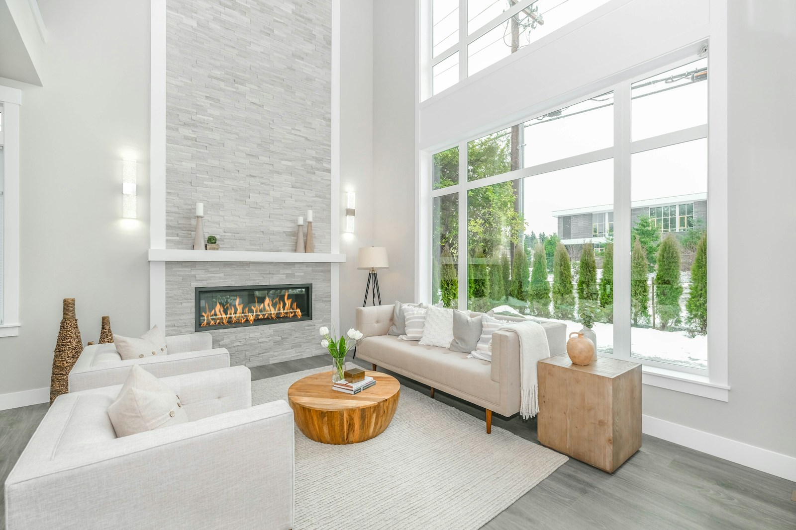

Home cleaning
A fresh feeling for the spaces you use most, from the kitchen to your favourite quiet corner.
- Living areas & bedrooms
- Kitchen & bathroom surfaces
- Dusting & floor care
Make room for the things you love.
Thoughtful cleaning for a home that feels as good as it looks.

From your everyday refresh to a deeper reset.
Find the right starting point for your space.
A fresh feeling for the spaces you use most, from the kitchen to your favourite quiet corner.
A more detailed reset for those overlooked corners and the places that need extra attention.
Close one chapter and start the next with a space that’s ready for a fresh beginning.
An uncluttered morning. A comfortable evening.
That lovely feeling when everything is in its place.
Your space, your routine, and the areas you’d like us to focus on.
Discuss the scope, availability and quote before making a booking.
A fresh space, with one less thing on your to-do list.
Have something else in mind?
Send us a message on WhatsApp.
Send a message on WhatsApp with your location, the size of your space and the type of cleaning you need. Add your preferred date and any areas that need special attention.
Home cleaning is a starting point for routine upkeep. Deep cleaning focuses on a more detailed reset. For an empty property before or after a move, ask about move-in and move-out cleaning. Confirm the final checklist when you enquire.
Yes—include the rooms, surfaces and priorities you have in mind in your enquiry, so the scope can be discussed before booking.
Contact us on WhatsApp with your area and preferred date. Availability, coverage and pricing should be confirmed directly before you book.
Tell us a little about your space. We’ll take it from there.